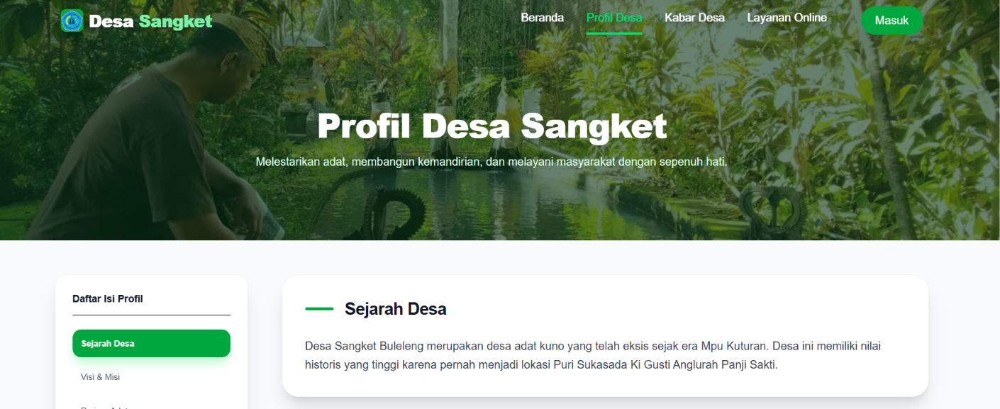
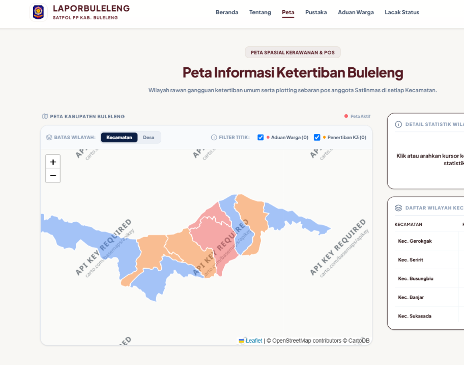
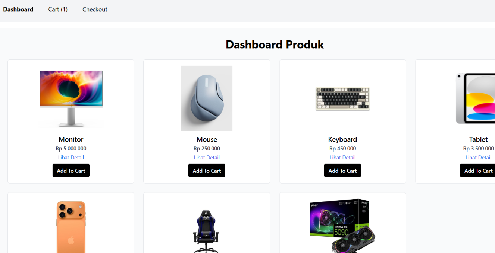

Hello There, IM
Wahyu
Nugraha
UI/UX Designer
& Web Developer

Hello There, IM
UI/UX Designer
& Web Developer
Saya adalah mahasiswa dan praktisi dari TRPL Undiksha, Bali. Saya mengkhususkan diri dalam menciptakan pengalaman digital yang brutalist, fungsional, dan menonjol secara estetika.
Dengan menggabungkan prinsip UI/UX yang tajam dan arsitektur pengembangan web yang tangguh, saya membangun produk yang tidak hanya dapat digunakan, tetapi juga berkesan.
Teknologi

Beberapa project yang pernah dibuild
Perancangan ulang situs resmi dan sistem informasi Desa Adat Sangket yang memadukan identitas budaya lokal Bali dengan antarmuka modern yang bersih, informatif, dan mudah diakses oleh masyarakat maupun wisatawan.
Dilengkapi integrasi pemetaan spasial WebGIS interaktif untuk menampilkan batas wilayah banjar, lokasi pura, serta fasilitas umum desa secara akurat menggunakan Next.js, Tailwind CSS, Prisma ORM, dan Supabase.

SiSangket — Halaman Utama
File: ./assets/images/ss1.png

SiSangket — Pemetaan WebGIS
File: ./assets/images/ss2.png

SIPPOL PP — Portal Pengaduan
File: ./assets/images/sip1.png

SIPPOL PP — Pemetaan Titik Laporan
File: ./assets/images/sip2.png
Platform pengaduan masyarakat dan pemetaan pelanggaran ketertiban umum untuk Satpol PP Kabupaten Buleleng yang mempermudah warga melaporkan kejadian secara cepat lengkap dengan bukti foto dan deskripsi lokasi.
Setiap laporan terhubung otomatis ke peta sebaran titik koordinat interaktif berbasis Next.js dan Prisma ORM sehingga petugas dapat memverifikasi laporan, memantau area rawan, dan mempercepat tindak lanjut di lapangan.
Sistem e-commerce dan manajemen toko bahan bangunan yang mempermudah pelanggan menelusuri katalog material, memeriksa ketersediaan stok, hingga melakukan pemesanan secara daring dengan alur transaksi yang ringkas.
Dibangun menggunakan Laravel dan React/Blade yang dilengkapi dashboard pengelolaan produk, pencatatan inventaris, serta pemrosesan pesanan secara terstruktur dan responsif.

BangunMart — Katalog Produk
File: ./assets/images/eco1.png

BangunMart — Manajemen & Transaksi
File: ./assets/images/eco2.png